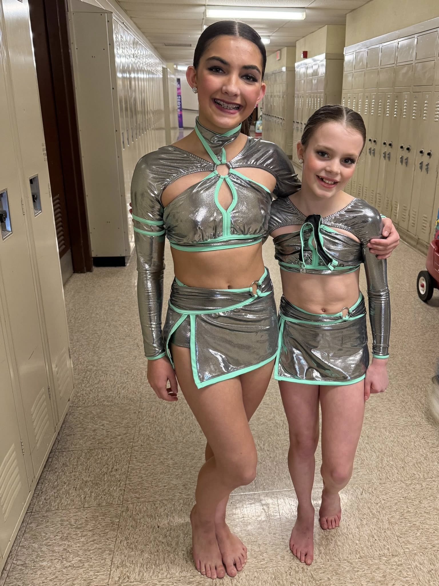
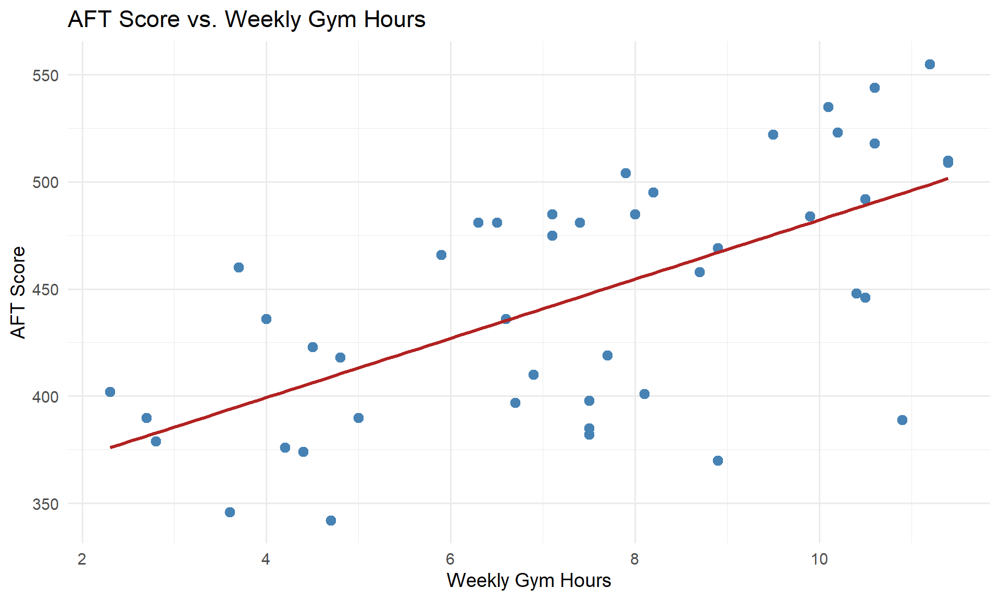
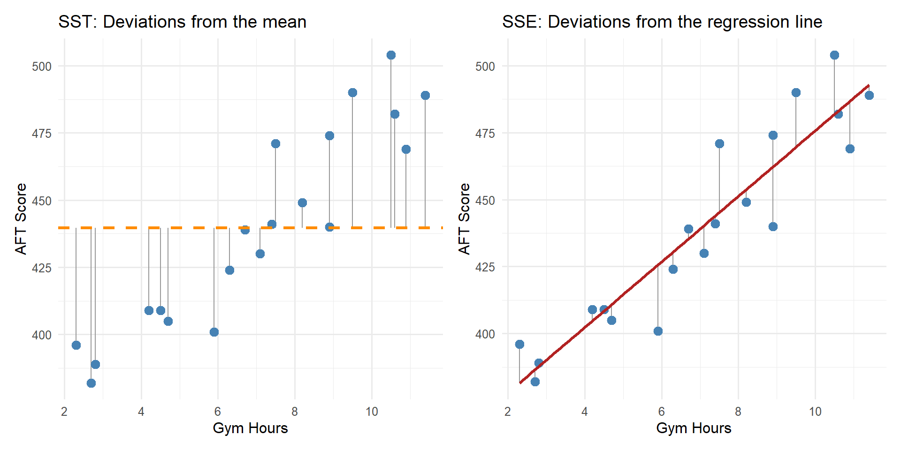
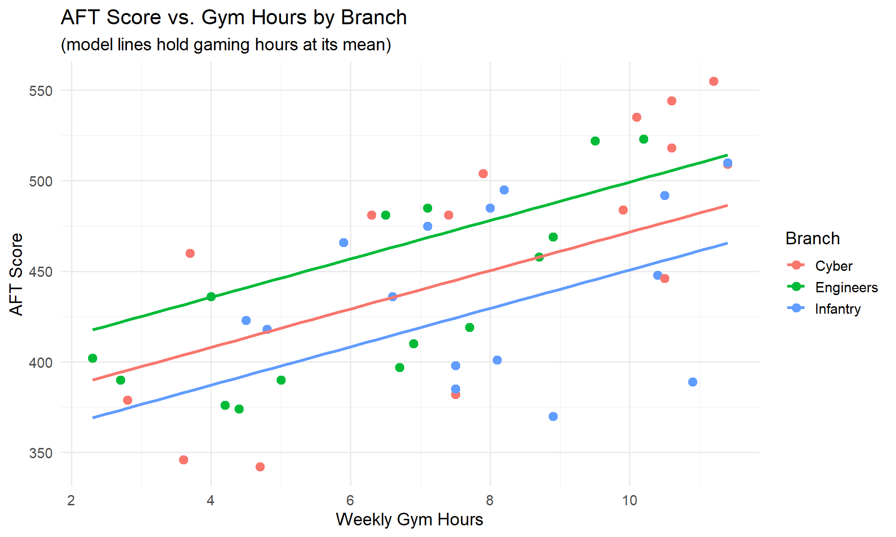

Lesson 30: Simple Linear Regression II

What We Did: Lesson 28 (SLR I)
NoteKey Concepts from Lesson 28
- Scatterplots describe direction, form, strength, and unusual features
- Least squares regression fits \(\hat{y} = b_0 + b_1 x\) by minimizing \(\sum(y_i - \hat{y}_i)^2\)
- Slope \(b_1\): predicted change in \(y\) for a 1-unit increase in \(x\) (interpret in context!)
- Intercept \(b_0\): predicted \(y\) when \(x = 0\) (may not be meaningful)
- Residuals: \(e_i = y_i - \hat{y}_i\)
- Extrapolation is dangerous – don’t predict outside the data range
What We’re Doing: Lesson 30
Objectives
- Test slope significance; build confidence intervals for \(\beta_1\)
- Produce prediction and mean-response intervals
- Use residual and QQ plots to assess model adequacy
Required Reading
Devore, Sections 12.3, 12.5
Spring Break!

March Mathness
The Takeaway for Today
ImportantToday’s Key Ideas
- Read the regression output: equation, p-values, and \(R^2\)
- Test the slope with \(t = b_1 / SE(b_1)\) to determine if \(x\) is a useful predictor
- \(R^2\) measures the fraction of variability in \(y\) explained by the model
TipCourse Project
After today’s lesson, you have the tools to complete about 95% of your project. You can fit regression models, interpret coefficients, assess significance, and compare models. Start applying these techniques to your Vantage dataset now!
Picking Up Where We Left Off
In Lesson 28, we fit a model predicting AFT scores from gym hours:
head(soldiers[, c("gym_hours", "aft_score")]) gym_hours aft_score
1 10.6 518
2 6.7 397
3 10.5 492
4 2.8 379
5 2.3 402
6 4.5 423
model <- lm(aft_score ~ gym_hours, data = soldiers)
summary(model)
Call:
lm(formula = aft_score ~ gym_hours, data = soldiers)
Residuals:
Min 1Q Median 3Q Max
-105.644 -31.471 7.454 37.627 64.745
Coefficients:
Estimate Std. Error t value Pr(>|t|)
(Intercept) 344.181 20.077 17.143 < 2e-16 ***
gym_hours 13.804 2.558 5.396 2.74e-06 ***
---
Signif. codes: 0 '***' 0.001 '**' 0.01 '*' 0.05 '.' 0.1 ' ' 1
Residual standard error: 44.56 on 43 degrees of freedom
Multiple R-squared: 0.4038, Adjusted R-squared: 0.3899
F-statistic: 29.12 on 1 and 43 DF, p-value: 2.74e-06There’s a lot in this output. What should we look at?
Reading the Regression Output
1. The Regression Equation
From the Estimate column, we get the coefficients:
\[\widehat{\text{AFT Score}} = 344.18 + 13.8 \cdot \text{Gym Hours}\]
- Slope (\(b_1 = 13.8\)): For each additional hour per week spent in the gym, a Soldier’s predicted AFT score increases by 13.8 points, on average.
- Intercept (\(b_0 = 344.18\)): A Soldier who spends zero hours per week in the gym has a predicted AFT score of 344.18 points.
2. The P-Values (Hypothesis Tests)
Each row in the coefficients table has a p-value. What hypotheses are being tested?
For the slope:
\[H_0: \beta_1 = 0 \quad \text{(no linear relationship between gym hours and AFT score)}\] \[H_a: \beta_1 \neq 0 \quad \text{(there is a linear relationship)}\]
If we fail to reject \(H_0\), that means gym hours is not a useful predictor of AFT score. This is the test we care about most.
For the intercept:
\[H_0: \beta_0 = 0\] \[H_a: \beta_0 \neq 0\]
This tests whether the intercept is different from zero – often less interesting in practice.
The p-value for the slope is 2.74^{-6} – very small. We reject \(H_0\) and conclude there is a statistically significant linear relationship between gym hours and AFT score.
3. \(R^2\) – How Well Does the Model Fit?
At the bottom of the output, look for Multiple R-squared.
Important\(R^2\): Coefficient of Determination
\[R^2 = 1 - \frac{SSE}{SST}\]
where:
- \(SST = \sum (y_i - \bar{y})^2\) – total variability in \(y\)
- \(SSE = \sum (y_i - \hat{y}_i)^2\) – residual variability (what the model can’t explain)
- \(SSR = SST - SSE\) – variability explained by the model
\(R^2\) is the proportion of variability in \(y\) explained by \(x\).
For our model, \(R^2 = 0.4038\), meaning gym hours explain about 40.4% of the variability in AFT scores.
Warning\(R^2\) Cautions
- A high \(R^2\) does not mean the model is correct – always check residual plots
- A low \(R^2\) does not mean \(x\) is useless – it just means lots of other factors matter too
- \(R^2\) always increases when you add predictors (we’ll address this with adjusted \(R^2\) in multiple regression)
Visualizing \(R^2\)

\(R^2\) measures how much the regression line reduces the deviations compared to just using \(\bar{y}\).
What If We Have More Than One Predictor?
Gym hours probably isn’t the only thing that affects AFT scores. It turns out we actually collected more data on these same Soldiers – we just haven’t looked at it yet:
head(soldiers[, c("gym_hours", "hours_gaming", "gpa", "aft_score")]) gym_hours hours_gaming gpa aft_score
1 10.6 2.3 2.80 518
2 6.7 18.1 3.35 397
3 10.5 2.8 3.41 492
4 2.8 10.1 2.14 379
5 2.3 12.7 3.61 402
6 4.5 9.5 2.71 423Now we have three potential predictors: gym hours, gaming hours, and GPA. Let’s fit a model with all three:
model_mlr <- lm(aft_score ~ gym_hours + hours_gaming + gpa, data = soldiers)
summary(model_mlr)
Call:
lm(formula = aft_score ~ gym_hours + hours_gaming + gpa, data = soldiers)
Residuals:
Min 1Q Median 3Q Max
-41.932 -14.411 -1.957 16.266 45.215
Coefficients:
Estimate Std. Error t value Pr(>|t|)
(Intercept) 414.882 23.442 17.698 < 2e-16 ***
gym_hours 9.293 1.323 7.025 1.52e-08 ***
hours_gaming -6.053 0.536 -11.292 3.68e-14 ***
gpa 7.522 5.807 1.295 0.202
---
Signif. codes: 0 '***' 0.001 '**' 0.01 '*' 0.05 '.' 0.1 ' ' 1
Residual standard error: 21.82 on 41 degrees of freedom
Multiple R-squared: 0.8637, Adjusted R-squared: 0.8538
F-statistic: 86.62 on 3 and 41 DF, p-value: < 2.2e-16Reading This Output
The same three things we looked for in SLR still apply:
1. The Equation:
\[\widehat{\text{AFT Score}} = 414.88 + 9.29 \cdot \text{Gym Hours} -6.05 \cdot \text{Gaming Hours} + 7.52 \cdot \text{GPA}\]
ImportantInterpreting MLR Slopes
In multiple regression, each slope is interpreted holding the other variables constant:
- For each additional gym hour per week, predicted AFT score increases by 9.29 points, holding gaming hours and GPA constant.
- For each additional hour of gaming per week, predicted AFT score decreases by 6.05 points, holding gym hours and GPA constant.
- For each additional GPA point, predicted AFT score changes by 7.52 points, holding gym hours and gaming hours constant.
2. The P-Values:
Each predictor has its own hypothesis test:
\[H_0: \beta_j = 0\] \[H_a: \beta_j \neq 0\]
Look at the p-values – gym hours and gaming hours have small p-values (significant predictors), but GPA does not. We fail to reject \(H_0: \beta_3 = 0\), meaning GPA is not a significant predictor of AFT score. That makes sense!
3. \(R^2\):
\(R^2 = 0.8637\) – gym hours, gaming hours, and GPA together explain about 86.4% of the variability in AFT scores.
WarningNot Every Variable Belongs in the Model
Just because you can add a predictor doesn’t mean you should. A non-significant predictor:
- Doesn’t meaningfully improve the model
- Adds complexity without explanatory power
- Can actually make predictions worse (more on this in later lessons)
Removing the Insignificant Predictor
Since GPA wasn’t significant, let’s drop it and refit with just gym hours and gaming hours:
model_reduced <- lm(aft_score ~ gym_hours + hours_gaming, data = soldiers)
summary(model_reduced)
Call:
lm(formula = aft_score ~ gym_hours + hours_gaming, data = soldiers)
Residuals:
Min 1Q Median 3Q Max
-37.023 -15.642 -0.592 19.137 44.532
Coefficients:
Estimate Std. Error t value Pr(>|t|)
(Intercept) 440.3093 12.9181 34.085 < 2e-16 ***
gym_hours 9.1099 1.3258 6.871 2.22e-08 ***
hours_gaming -6.1731 0.5322 -11.599 1.12e-14 ***
---
Signif. codes: 0 '***' 0.001 '**' 0.01 '*' 0.05 '.' 0.1 ' ' 1
Residual standard error: 21.99 on 42 degrees of freedom
Multiple R-squared: 0.8581, Adjusted R-squared: 0.8514
F-statistic: 127 on 2 and 42 DF, p-value: < 2.2e-16\[\widehat{\text{AFT Score}} = 440.31 + 9.11 \cdot \text{Gym Hours} -6.17 \cdot \text{Gaming Hours}\]
\(R^2 = 0.8581\) – nearly the same as the three-predictor model (\(R^2 = 0.8637\)). Dropping GPA barely changed anything because it wasn’t contributing meaningful explanatory power.
Comparing All Three Models
| Model | # Predictors | \(R^2\) |
|---|---|---|
| SLR: Gym Hours only | 1 | 0.4038 |
| MLR: Gym Hours + Gaming + GPA | 3 | 0.8637 |
| MLR: Gym Hours + Gaming | 2 | 0.8581 |
Adding gaming hours to the model was a big improvement. Adding GPA on top of that did almost nothing – and removing it didn’t hurt. More predictors isn’t always better.
What About Categorical Predictors?
So far all our predictors have been numbers. But we also recorded each Soldier’s MOS branch – Infantry, Cyber, or Engineers:
head(soldiers) gym_hours hours_gaming gpa branch aft_score
1 10.6 2.3 2.80 Cyber 518
2 6.7 18.1 3.35 Engineers 397
3 10.5 2.8 3.41 Infantry 492
4 2.8 10.1 2.14 Cyber 379
5 2.3 12.7 3.61 Engineers 402
6 4.5 9.5 2.71 Infantry 423branch is a categorical variable with three levels. R handles this using indicator (dummy) variables:
model_cat <- lm(aft_score ~ gym_hours + hours_gaming + branch, data = soldiers)
summary(model_cat)
Call:
lm(formula = aft_score ~ gym_hours + hours_gaming + branch, data = soldiers)
Residuals:
Min 1Q Median 3Q Max
-16.821 -8.555 -1.591 7.885 27.441
Coefficients:
Estimate Std. Error t value Pr(>|t|)
(Intercept) 435.2475 6.9776 62.378 < 2e-16 ***
gym_hours 10.5989 0.6934 15.284 < 2e-16 ***
hours_gaming -7.0000 0.2888 -24.236 < 2e-16 ***
branchEngineers 27.6409 4.4745 6.177 2.66e-07 ***
branchInfantry -20.8838 4.1198 -5.069 9.50e-06 ***
---
Signif. codes: 0 '***' 0.001 '**' 0.01 '*' 0.05 '.' 0.1 ' ' 1
Residual standard error: 11.26 on 40 degrees of freedom
Multiple R-squared: 0.9646, Adjusted R-squared: 0.9611
F-statistic: 272.5 on 4 and 40 DF, p-value: < 2.2e-16Reading This Output
\[\widehat{\text{AFT Score}} = 435.25 + 10.6 \cdot \text{Gym Hours} - 7 \cdot \text{Gaming Hours} + 27.64 \cdot \text{Engineers} - 20.88 \cdot \text{Infantry}\]
Wait – what are “Engineers” and “Infantry” in an equation? And where did Cyber go?
ImportantReference Level
R picks one level as the reference (baseline) – here it’s Cyber (alphabetically first). The indicator variables Engineers and Infantry are 0 or 1, so they “turn on” for that branch. Cyber doesn’t appear because it’s the baseline (both indicators = 0).
- Intercept (\(435.25\)): predicted AFT score for a Cyber Soldier with 0 gym hours and 0 gaming hours
- gym_hours (\(10.6\)): each additional gym hour increases predicted AFT score by 10.6 points, holding gaming hours and branch constant
- hours_gaming (\(-7\)): each additional gaming hour decreases predicted AFT score by 7 points, holding gym hours and branch constant
- branchEngineers (\(27.64\)): Engineers score 27.64 points higher than Cyber, holding all else constant
- branchInfantry (\(-20.88\)): Infantry score -20.88 points lower than Cyber, holding all else constant
The ordering is Infantry < Cyber < Engineers for predicted AFT scores.
All predictors are significant, and \(R^2 = 0.9646\).

Notice the three separate lines – each branch has a different intercept but similar slopes. The vertical gaps between branches reflect the branch coefficients.
Project: Brigade Lethality Analysis
You and your partner will conduct a complete statistical analysis of real brigade-level data from Army Vantage. Your goal: ask interesting questions about readiness and answer them with the tools you’ve learned this semester.
The Question
Start with a clear, specific research question relevant to your brigade’s readiness. Your analysis should tell a story that matters to a commander.
Required Analyses
One-sample hypothesis test – Compare your brigade to a standard
- EDA: visualize the variable (histogram, boxplot), report descriptive stats
- State \(H_0\) and \(H_a\), run the test, report p-value and CI
- Interpret in context (e.g., “Our brigade’s mean AFT score is significantly above the 360 promotion standard”)
Two-sample hypothesis test – Compare two groups within your brigade
- EDA: side-by-side boxplots or density plots, descriptive stats for each group
- State \(H_0\) and \(H_a\), run the test, report p-value and CI
- Interpret in context (e.g., “Combat Arms Soldiers score significantly higher than Combat Support on the AFT”)
Multiple linear regression – What predicts the outcome?
- EDA: scatterplots, correlation matrix, identify potential predictors
- Fit the model, assess significance of each predictor, report \(R^2\)
- Interpret coefficients in context, compare models, justify your final model
Deliverables
| Event | Lesson | Points |
|---|---|---|
| Peer Review | 34 | – |
| Technical Report | 36 | 125 |
| IPR Briefing | 37 | 10 |
| Presentation | 39 | 40 |
Board Problems
Problem 1: Predicting Ruck March Times
A battalion S3 collects data on 25 Soldiers to see if weekly running miles predicts 12-mile ruck march time (in minutes). The regression output gives:
\[\widehat{\text{Ruck Time}} = 210 - 2.8 \cdot \text{Running Miles}\]
with \(R^2 = 0.62\), \(SE(b_1) = 0.55\), and running miles ranged from 5 to 30.
NoteQuestions
Interpret the slope in context.
Interpret \(R^2\) in context.
Test whether running miles is a significant predictor of ruck time at \(\alpha = 0.05\). State hypotheses, compute the test statistic, and state your conclusion.
A Soldier runs 40 miles per week. Should we use this model to predict their ruck time? Why or why not?
TipAnswers
For each additional mile run per week, a Soldier’s predicted 12-mile ruck march time decreases by 2.8 minutes, on average.
62% of the variability in ruck march times is explained by the linear relationship with weekly running miles. The remaining 38% is due to other factors (e.g., load carried, terrain experience, body composition).
\(H_0: \beta_1 = 0\)
\(H_a: \beta_1 \neq 0\)
\(t = b_1 / SE(b_1) = -2.8 / 0.55 = -5.09\), with \(df = 25 - 2 = 23\).
The p-value for \(|t| = 5.09\) with 23 df is very small (< 0.001). We reject \(H_0\) and conclude there is a statistically significant linear relationship between weekly running miles and ruck march time.
- No. The data only covers Soldiers running 5 to 30 miles per week. Predicting at 40 miles is extrapolation – we have no evidence the linear trend continues that far. The model would predict \(210 - 2.8(40) = 98\) minutes, which might be unrealistically fast.
Problem 2: Marksmanship Training
A company commander models the relationship between hours of dry-fire practice per month and rifle qualification score (out of 300) for 30 Soldiers. R output:
Coefficients:
Estimate Std. Error t value Pr(>|t|)
(Intercept) 185.20 8.45 21.92 < 2e-16 ***
dry_fire 4.15 1.02 4.07 0.000345 ***
Residual standard error: 18.3 on 28 degrees of freedom
Multiple R-squared: 0.372
NoteQuestions
Write the fitted regression equation.
Interpret the slope and intercept in context.
Test whether dry-fire hours is a significant predictor of qualification score at \(\alpha = 0.05\).
What does \(R^2 = 0.372\) tell us? Is this model “good”?
TipAnswers
\(\widehat{\text{Qual Score}} = 185.20 + 4.15 \cdot \text{Dry Fire Hours}\)
Slope: For each additional hour of dry-fire practice per month, a Soldier’s predicted qualification score increases by 4.15 points, on average.
Intercept: A Soldier with zero hours of dry-fire practice per month has a predicted qualification score of 185.20 points. (This is meaningful – some Soldiers may not do extra dry-fire practice.)
- \(H_0: \beta_1 = 0\)
\(H_a: \beta_1 \neq 0\)
\(t = b_1 / SE(b_1) = 4.15 / 1.02 = 4.07\), with \(df = 30 - 2 = 28\).
The p-value is \(0.000345 < 0.05\). We reject \(H_0\) and conclude there is a statistically significant linear relationship between dry-fire hours and qualification score.
- 37.2% of the variability in qualification scores is explained by dry-fire hours. Whether this is “good” depends on context – marksmanship depends on many factors (eyesight, breathing control, stance, experience). Explaining 37% with a single variable is informative, even if other predictors would improve the model.
Before You Leave
Today
- Read the regression output: equation, p-values, and \(R^2\)
- Test the slope with \(t = b_1 / SE(b_1)\) – if significant, \(x\) is a useful linear predictor
- \(R^2\) measures the proportion of variability explained by the model
Any questions?
Next Lesson
Lesson 31: Multiple Linear Regression I
- Multiple predictors: \(\hat{y} = b_0 + b_1 x_1 + b_2 x_2 + \cdots\)
- Interpreting coefficients when there are multiple predictors
- Adjusted \(R^2\) and multicollinearity
Upcoming Graded Events
- Tech Report – Due Lesson 36